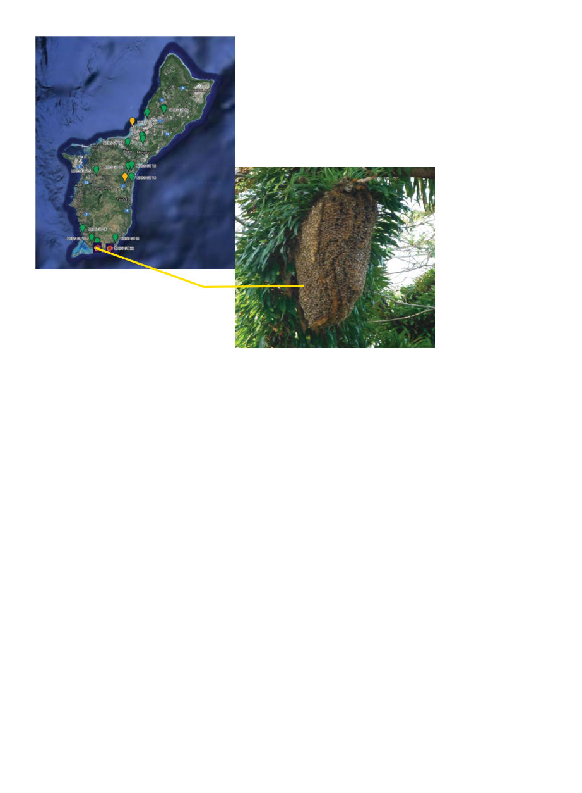

American Bee Journal
106
I
made a shocking discovery the
other day … which was that Chris-
topher Rosario made a shock-
ing discovery a few years ago. I was
browsing through a recent issue of
Entomology Today, as one does, and
there was an article1 that mentioned
that Guam State Entomologist Chris-
topher Rosario had “eradicated an in-
vasive parasite,” but didn’t mention
which one. Eradicating an invasive
parasite is always a worthwhile activ-
ity so I thought I’d contact him to find
out what he had eradicated.
“Varroa mites,” he wrote back.2 I
about fell out of my chair. I recovered
myself, repeating surely, surely it was
just the less dangerous “Varroa jacob-
sonii” though. So I asked him. “Varroa
destructor,” he said. For the next few
days, “Have I told you about Guam??”
was all I could say to anyone.
Now before I tell you his story, let
me tell you about Guam. Guam is a
small island in the west Pacific about
1300 miles east of the Philippines, 1000
miles north of Papua New Guinea, and
1,500 miles south of Japan, which is to
say really far from the nearest “main-
land” of any kind. The island is 210
square miles in size, which, to compare
to an island you might be more likely
to be familiar with, is about a quarter
(well 29%) of the size of the Hawai-
ian island of Maui, with just a slightly
higher population. The population of
Guam is relatively concentrated in the
north, with the population of the more
rugged south mostly limited to coastal
villages. The south has, according to
Rosario, “mostly lots of rivers, ponds,
and waterfalls,” and having Googled it
myself, the waterfalls look very pretty.
Also relevant to our story here,
Guam is not entirely alone in the
Pacific; the Commonwealth of the
Northern Mariana Islands (CNMIs)
is another cluster of islands of which
the main islands are 50-125 miles
north of Guam. Both Guam and the
CNMIs are U.S. territories — I for
one had no idea the CNMIs existed,
nor that we have a type of territory
that is itself a commonwealth, but
there you go.
Honey bees are, of course, not na-
tive to Pacific Islands. Apis mellifera
ligustica, the Italian bee, was first in-
troduced to Guam in 1907 from Ha-
waii (where bees had arrived in 1857
from California,3 where bees had only
arrived in 1853,4 but I digress), with
some follow-up importations of more
bees until in 1954 the Organic Act
of Guam was signed, which banned
further importation of honey bees to
Guam. The Northern Mariana Islands
continued to import bees from Hawaii
until 2010 … varroa had arrived in
Hawaii in 2007.5
Which brings us to our story. Chris-
topher Rosario, a native of Guam, had
graduated the University of Guam in
2012 with a bachelor’s degree in biolo-
gy and wanted to become a veterinar-
ian. In 2013 he found a job opening as
a field technician conducting the Proj-
ect APHIS (USDA Animal and Plant
Health Inspection Service) National
Honey Bee Survey (NHBS, https://
ushoneybeehealthsurvey.info/) to
see if varroa or Tropilaelaps mites were
present in Guam and the Northern
Mariana Islands. Not having a back-
ground in beekeeping, he was initially
afraid of getting stung to death, but he
had a lot of debt from his bachelor’s
degree, and veterinary school would
only have added to it, so he applied
for and got the bee survey job.
The NHBS wanted him to survey 24
apiaries, but there was a problem —
there were only four established api-
aries on the island! He put word out
in the local media requesting the pub-
lic to call in feral colonies, and soon
three to four times a week people
were calling him to remove colonies
from their homes, or asking how to
start keeping bees.
On the 3rd of March 2014,6 near the
village of Malesso beside the Cocos
Lagoon, he was called out to a large
exposed colony 25 feet up in a mon-
keypod tree (Samanea saman, Photo
by Kris Fricke
Photo 1 The honey bee colonies
in the initial APHIS survey, line
pointing at the initial detection,
with second detection near it.
Varroa Eradicated
from Guam
Photo 2 GU-12, the
first detection